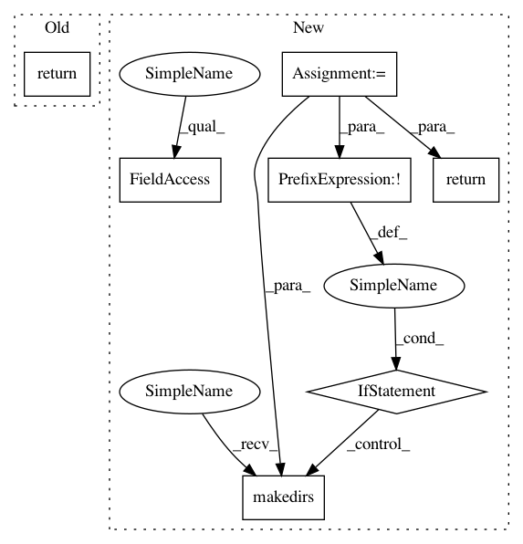

4d38da71d4776343111e75df51255e7517d2c500,python/vmaf/config.py,VmafConfig,test_resource_path,#Any#,173
Before Change
@classmethod
def test_resource_path(cls, *components):
return cls.root_path("python", "test", "resource", *components)
@classmethod
def tools_resource_path(cls, *components):
return cls.root_path("python", "vmaf", "tools", "resource", *components)
After Change
@classmethod
def test_resource_path(cls, *components):
local_path = cls.root_path("python", "test", "resource", *components)
if not os.path.exists(local_path):
if not os.path.exists(os.path.dirname(local_path)):
os.makedirs(os.path.dirname(local_path))
remote_path = os.path.join(VMAF_RESOURCE_ROOT, "python", "test", "resource", *components)
urllib.request.urlretrieve(remote_path, local_path)
return local_path
@classmethod
def tools_resource_path(cls, *components):
return cls.root_path("python", "vmaf", "tools", "resource", *components)
In pattern: SUPERPATTERN
Frequency: 4
Non-data size: 7
Instances
Project Name: Netflix/vmaf
Commit Name: 4d38da71d4776343111e75df51255e7517d2c500
Time: 2020-04-17
Author: zli@netflix.com
File Name: python/vmaf/config.py
Class Name: VmafConfig
Method Name: test_resource_path
Project Name: Netflix/vmaf
Commit Name: 4d38da71d4776343111e75df51255e7517d2c500
Time: 2020-04-17
Author: zli@netflix.com
File Name: python/vmaf/config.py
Class Name: VmafConfig
Method Name: test_resource_path
Project Name: sony/nnabla-examples
Commit Name: 809d39a619b63e87a0044175f296083eb88e2891
Time: 2021-03-10
Author: Xu.Song@sony.com
File Name: NAS/ENAS/args.py
Class Name:
Method Name: get_macro_args
Project Name: PyThaiNLP/pythainlp
Commit Name: 3546a316472865828ddbc56c5019aecd7a335082
Time: 2018-06-23
Author: wannaphong@yahoo.com
File Name: pythainlp/tools/__init__.py
Class Name:
Method Name: get_path_pythainlp_data
Project Name: sony/nnabla-examples
Commit Name: 809d39a619b63e87a0044175f296083eb88e2891
Time: 2021-03-10
Author: Xu.Song@sony.com
File Name: NAS/ENAS/args.py
Class Name:
Method Name: get_micro_args